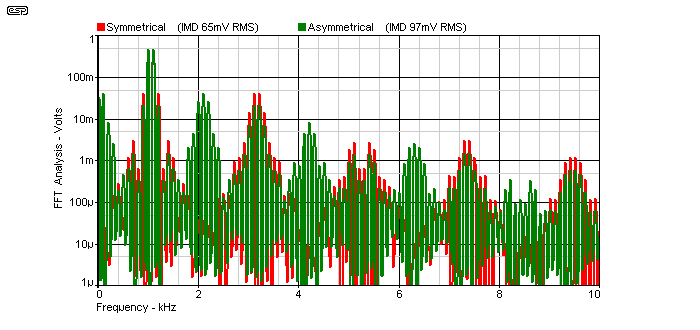

|
|
| Elliott Sound Products | Valves (Vacuum Tubes) - Harmonic and Intermodulation Distortion |
 Valves Index
Main Index
Valves Index
Main Index
There is a long running and generally false belief that second harmonic distortion is "nice", that even order distortion is preferable to odd-order distortion, and that valves (in particular) produce second harmonic distortion. This apparently (and supposedly) is the dominant reason that valve guitar amps sound "better" than transistor amps.
Firstly, second harmonic distortion never exists in isolation. It is impossible to obtain only second harmonic distortion - there will always be traces of third, fourth, fifth, etc. in the final waveform. Single-ended valve and transistor stages (both power amps and preamps) do generate predominantly second harmonic distortion, but it is not isolated. The other frequencies will always be present, although they may be at a relatively low level.
Secondly, any harmonic distortion also results in intermodulation distortion (IMD), and that is the main topic of this article. There is nothing nice about IMD, unless it is part of the player's sound in the case of musical instrument amplifiers (guitar, bass, keyboards, etc.). In any reproduction system such as a home hi-fi, IMD adds components to the sound that were not in the recording. While a small amount of IMD will often be difficult to hear, it has always been desirable to reduce it to the absolute minimum.
The invention of negative feedback was not designed simply to reduce simple harmonic distortion, although it did that as a matter of course. Harold Black invented the concept in 1927, and it was intended to solve an increasingly troublesome problem - intermodulation distortion. He worked in the telecommunications sector at Western Electric (and eventually at Bell Labs), and IMD was a major problem with early long distance multi-channel carrier transmission systems. The goal was to minimise the intermodulation products that created havoc when two or more separate signals existed on a single telecommunications transmission line.
Note: For a far more in-depth look at the phenomenon described here, please refer to Intermodulation - Something New To Ponder. The article shows bot measurements and simulations, and includes sound files that can be used to verify that my findings are real and easily reproduced.
When a single ended stage starts to approach clipping (guitar amp preamps, single-ended output stages, etc.), the distortion is almost always asymmetrical. One polarity of the waveform is distorted while the other remains (relatively) clean. Somehow, it is believed that this is nicer than symmetrical distortion, which by its very nature produces almost exclusively odd-order harmonics.
Because of the misconceptions that abound, I decided to run some tests to see if there were a way to demonstrate the difference between symmetrical and asymmetrical clipping. As it turns out, asymmetrical clipping is actually worse than I thought, as described below. As a guitar effect there will undoubtedly be players who will find it useful, but I seriously doubt that anyone would like to have no alternative. Because of the number of possibilities for distortion, a simple clipping circuit was used because this provides higher levels of distortion (making it easier to hear and measure), and also means that the circuit is easily duplicated by anyone else who wishes to do the tests for themselves.
Regardless of the type of (harmonic) distortion, intermodulation distortion (IMD - generally agreed by everyone to be the very worst kind of distortion) is always one of the results. IMD creates additional frequencies that are said to be the sum and difference of the original frequencies in the input waveform. When a complex musical passage is the source, the IMD products can be quite extraordinary. The result is serious aural confusion of the signal, where what used to be an orchestra with different instruments becomes a "wall of sound".
While the tests described here are deliberately exaggerated, the principles remain the same even at much lower distortion levels. There is no form of non-linearity that will fail to produce intermodulation distortion, so the goal for hi-fi is always to minimise intermodulation distortion. Since low intermodulation demands high linearity, simple harmonic distortion is also reduced.
The holy grail of analogue design has always been the mythical "straight wire with gain" - an ideal amplifier. The ideal amplifier is one that has infinite bandwidth and input impedance, an output impedance of zero ohms, and can provide infinite current. Naturally, it has no distortion whatsoever. While readily available as mathematical models in simulators, the real world and the laws of physics prevent us from obtaining one. When confined to a set of parameters that are suitable for audio reproduction, many modern amps come so close to the ideal that it is difficult to measure any major deviation from the ideal. Certainly, distortion figures are commonly so good that any distortion (of any type) produced by the amplifier will be well below the threshold of audibility. This is how it should be.
When we look at valve (tube) amplifiers, the situation is not so good. Many fine valve amplifiers have been built, and some were almost as good as today's well designed transistor amps. There are also a great many new designs that fail to meet the most basic standards of high fidelity.
Especially with guitar amps, distortion is not just a fact of life, but a requirement for a great many players. In the case of hi-fi, it's generally not something that should ever be heard, but for very low powered systems (less than 10W) it is inevitable that programme material with a wide dynamic range will distort during loud passages if anything more than very modest SPL is required.
In the case of single-ended valve stages, they will generate increasing levels of predominantly second harmonic distortion as the level is increased. With sufficient level, such amplifiers will almost invariably clip asymmetrically, producing allegedly "nice" even-order distortion. Push-pull stages will clip symmetrically, and this gives "bad" and "horrible" odd-order distortion ... or so we are told. It is a fact of life that a properly set up push pull stage will cancel most even-order distortion, and any stray second harmonic distortion is almost totally cancelled.
Presumably, this is the reason that so many people seem to like single-ended (especially triode) amplifiers. Note that with a push-pull output stage, only even-order distortion generated in the output stage is cancelled - any distortion produced by prior stages becomes part of the signal and cannot be removed or cancelled.
 | Interestingly, apart from a few very small low-budget and/or practice amps, all guitar amps over about 5W are push-pull. Look at Fender, Marshall, Ampeg, Boogie, Vox (UK made models), Australian amps like Lenard, Vase, Strauss ... the list is endless, and they all have push-pull output stages. So much for the claims of second harmonics - remember that a push-pull stage cancels the second harmonic, and the output distortion consists of predominantly odd-order harmonics. Indeed, looking at the circuits for most of the popular guitar amps shows that the vast majority use drive stages that remain symmetrical until the power stage is in gross overload. There are a few amps that do not clip symmetrically, and these are not amongst the popular brands because they sound bad when driven hard. |
Figure 1 shows the test setup I used in the simulator to measure the results. Two signal generators are used, one producing a 1kHz sinewave and the other producing 1.1kHz - both at 1V peak (707mV). The signals are mixed together, giving a composite signal with a voltage of 494mV. This would have been 500mV with no load, but there is a small load to the clipping circuits that reduces the level slightly.
Figure 1 - Test Circuit Used In Simulator
One of the advantages of a simulator is that it's easy to use very low value mixing resistors - as you can see, they are R1 and R2, at 10 ohms each. To build the circuit, these resistors would need to be much higher in value, and would need a buffer stage prior to the clipping circuits. R3 and D1 form an asymmetrical clipping circuit, and only the positive peaks are clipped. R4, D2 and D3 form the symmetrical clipper. The output voltages for each output are shown - the symmetrical clipper has a lower output voltage because more of the signal is clipped off by the diodes.
Figure 1A - Test Circuit Used For Listening Tests
To listen to the effects, I used the above circuit. This allows you to listen to the original composite tone, as well as the two different clipped waveforms. If you don't understand the concept of intermodulation distortion, then I urge you to try this. I don't expect that many people will have access to a spectrum analyser, but for those who do you will see waveforms very similar to those shown below, depending on the resolution of the analyser.
The goal is to ensure that the concepts are understood. If you don't realise what's happening, a small amount of intermodulation and second harmonic distortion may well sound as if the music is "enriched" somehow (I shall refrain from using any of the meaningless reviewer terms). In reality, you're hearing things that simply were not in the original recording. Whether you like this effect or not is immaterial, what is important is that you understand the reasons that cause it to sound different. Different is rarely better, but this seems to have been lost in the clutter of nonsense that surrounds the audiophile fraternity, where different seems to mean "better" in most cases. I find this puzzling - I fully expect that any of my designs should sound much the same as any other, with the differences being output power, convenience, size or other design goal.
Any two amplifiers of good performance should sound the same, and if any difference exists there will be a good reason for it. The nonsense you may hear that some amps are hugely better than others is just silly - there is no logical or scientific reason that two amplifiers of similar overall specification can possibly sound different from each other. Strangely, the amps that are supposedly superior almost always have more distortion, higher output impedance and worse frequency response than their "inferior" brethren. The basic criteria for hi-fi were established a long time ago, and have improved over the years, yet we have some reviewers claiming that valve equipment that was below par 50 years ago is better than transistor amps that trounce these "new-old" amps in every respect. It's very hard not to be cynical.
The tests I did are repeatable by anyone, and although the end result is exaggerated it does demonstrate the principles of both total harmonic distortion (THD) and IMD. Although I have only shown the results for IMD, it's also important to turn down one of the signal generators so you can also hear the difference between the symmetrical and asymmetrical distortion on a single sinewave. Vary the signal level so you can get a feel for the audibility of low-level distortion on a sinewave (which is far more audible than with music). It is possible to hear less than 0.5% THD on a single sinewave.
Figure 2 - Output Waveforms Of Each Clipping Circuit
The voltage waveforms from each clipping circuit are shown above. As you can see, the symmetrical clipper limits the peak voltage to ±600mV, but the asymmetrical circuit only limits the positive side, the negative side reaches -1V peaks. Not surprisingly, the asymmetrical waveform has slightly less harmonic distortion, at 13.1%. The symmetrically clipped waveform measures a THD of 15.5%, so in theory it should sound worse (although in truth, both will sound pretty awful).
The interesting measurement is not THD though - intermodulation distortion (IMD) is the sworn enemy of quality reproduction, and anything that reduces IMD is a bonus. By using the FFT (Fast Fourier Transform) facility in the simulator, it is possible to look at both the harmonic and intermodulation products of each clipped waveform, and that's where the big surprise lies. The two FFT traces are shown below. Without distortion, there would be two vertical peaks - one at 1kHz and the other at 1.1kHz. Everything else you see below is the direct result of distortion. Harmonic distortion is created for the two input frequencies, and intermodulation distortion is based on the mixture of the original frequencies, their harmonics, as well as sum and difference frequencies based on every frequency - originals plus distortion components.

Figure 3 - Harmonic & Intermodulation Products
Intermodulation creates additional sum and difference frequencies, so from 1kHz and 1.1kHz, we get 100Hz and 2.1kHz. Because the original frequencies are distorted, sum and difference frequencies are also generated for the harmonics. It stands to reason that fewer harmonics means fewer intermodulation products, and lower IMD is (and has been for a very long time) the goal of most designers. It is interesting to note that symmetrical clipping does not create the difference frequency! Those frequencies around 100Hz (1.1kHz - 1kHz = 100Hz) are completely missing. 100Hz is very visible on the green (asymmetrical) trace though, and it's also very audible.
It is immediately obvious that there are many more intermodulation products in the green trace than in the red, and the green trace is the asymmetrically clipped waveform. Sum and Difference products are quite obvious in both, but the symmetrical waveform (almost) completely lacks the frequencies at and around 100Hz, 2kHz, 4kHz, 6kHz and 8kHz (and beyond of course).
Note that the asymmetrical waveform not only includes the frequencies missing from the symmetrical waveform, but also includes all of the frequencies one expects in the harmonic structure. In other words, the asymmetrical waveform contains not only the supposedly "nice" even-order harmonics and intermodulation products - it also contains all of the supposedly nasty odd-order ones as a bonus.
There is absolutely nothing to gain by using circuits that produce even-order harmonics, because the intermodulation products are far worse than the simple harmonic distortion may indicate. Looking at the measured levels of the intermodulation products, we see that ...
While the above seems counter-intuitive, it is easily tested using a pair of signal generators and a couple of diodes and resistors. There is nothing at all pleasant about the sound of the clipped waveforms - both sound pretty awful. The asymmetrically clipped waveform actually does sound marginally less harsh than the symmetrically clipped waveform, and it also has one characteristic that makes it sound "better" - it creates bass! The difference frequency of 100Hz is quite audible, and this helps to trick your ears into thinking that it sounds "nice".
By comparison, while the signal is still obviously distorted, the symmetrical clipping circuit has a marginally harder sound overall, and it lacks the bass (difference) signal so will almost invariably be judged to sound worse. This is what you will hear from most experts, and will read in countless books and websites. The fact is that both sound dreadful, and all measures possible must be used to minimise all forms of distortion in order to keep intermodulation distortion low.
It is extremely important that anyone who doubts the claims made above builds the test circuit and listens for themselves. Every claim I've made can be reproduced and tested easily - that's why the complete circuit details are included. Unless people fully understand all aspects of distortion (and what it does to the music), we will continue to hear nonsense about negative feedback somehow "ruining" the sound and similar sillyness.
Remember that the goal of any high fidelity system is that it should neither remove nor add anything to the original. The least intrusive change is frequency response distortion. Frequencies (very low or very high) may be reduced, or the overall frequency response might be modified. These are forms of distortion that are generally easy enough to deal with by applying equalisation ... depending on the reason for the anomaly. Harmonic and intermodulation distortion are another matter altogether. Once a signal's waveshape has been distorted, it is (generally speaking) impossible to remove the additional frequencies that were generated.
If you were to build a circuit that generated the exact opposite of the original distortion, you can actually "undo" the distortion, but such a circuit is extraordinarily difficult to achieve. It has to replicate a perfect inverse of the original distortion, so that every harmonic and IMD product is generated with the exact opposite polarity so the two complete sets of unwanted frequencies will be cancelled. While this can be done easily enough in a simulator using ideal components (everything matched perfectly in all respects), it's a tad more difficult when you have a circuit that creates distortion that changes with age, temperature and whim. While it is certainly feasible, complex waveforms will be subjected to intermodulation ... twice. The original distorting circuit will add IMD, and the second "anti-distortion" circuit will also add IMD, but with all signals of the opposite polarity. An "anti-distortion" circuit for a single-ended valve power amp would be very complex indeed.
Arranging the valves in push-pull is the simplest possible arrangement, but that only cancels even harmonics. Even so, the reduction of IMD is very worthwhile, and not one of the high quality valve amps that were available at the end of the "valve era" used a single-ended output stage ... not one ! All of these expensive (McIntosh, Quad, etc.) amps went to extremes to reduce distortion to the minimum possible. Were the designers of the day wrong? I certainly don't think so.
Intermodulation is a function of all non-linear circuits, and is not negotiable. The supposedly "nice" even order (single ended) distortion creates more intermodulation products than the "nasty" odd-order distortion - as might be found in minuscule amounts from very high quality push-pull valve amps, opamps and transistor power amps. These days, the levels are so low as to be difficult to measure, and are well below the threshold of audibility.
Everything shown or described above can be reproduced in any home lab quite easily - no data have been doctored in any way. Graphs and charts were formatted to match normal ESP styles, but the data are unchanged. All waveforms were produced using the SIMetrix simulator, and are easily reproduced. Most simulation packages will give very similar (if not identical) results.
I urge anyone who might have the slightest doubt to do the test for themselves. Get hold of a couple of audio generators, resistors and diodes. Hook up the circuit as shown in Figure 1A - listen to the output results. I did, and also checked that the simulated FFT matches reality - my oscilloscope has FFT capabilities and the traces show clearly that the simulations are very close to reality. Some variations are to be expected, simply because exact values and frequencies are too time-consuming to try to achieve.
It is critically important to understand that if two amplifiers sound different from each other (in a proper blind test), then one or both of them has a fault. There have been some extraordinarily good valve amps made, and without exception they are push-pull. Some of these amplifiers will be found to be virtually indistinguishable from a good transistor amp in a double-blind listening test. The extension of this is that if you can hear a difference between a valve amplifier (of any topology) and a good quality transistor amp, the valve amp is obviously making changes to the signal that the transistor amp is not.
The most common change is distortion, although frequency response is often wobbly if the amp's output impedance is non-zero. Frequency response is easily corrected with equalisation, but harmonic and intermodulation distortion cannot be undone with real-life circuits. While it might be possible with some extremely clever DSP (digital signal processor) programming, there are literally countless modern amplifiers available that already have distortion and intermodulation levels that are well below the threshold of audibility, with many close to the limits of measurement equipment.
If it turns out that you like harmonic and intermodulation distortion, and prefer to listen to your music with this distortion, then far be it for me to deny you this pleasure. I only ask that you don't claim that it's hi-fi, and don't try to convince me or anyone else that we should share your passion.
As noted earlier, make sure that you read Intermodulation - Something New To Ponder, as the analysis of asymmetrical vs. symmetrical distortion is covered in greater depth, and has additional resources so you can prove it to yourself.
Valves Index
Main Index